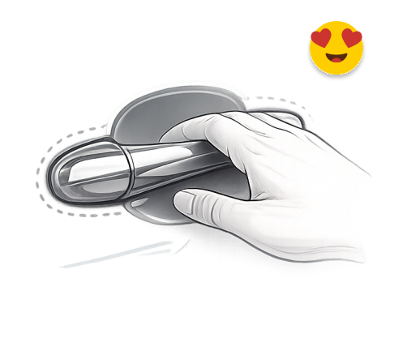

In the age of AI, designers must think beyond screens. From research to UI to production-ready experiences.


Worked through tenXengage
Worked through Hurix Systems
Case Study
DESIGN FOR HEALTHCARE ECOSYSTEM
Elders need freedom over dependency.
A silent care and self guided system can only
bring back the trust for them. The trust they
have lost from online care systems.
Tools & Technologies



Modern isn't always easier.
Sometimes elegance hides friction.
|